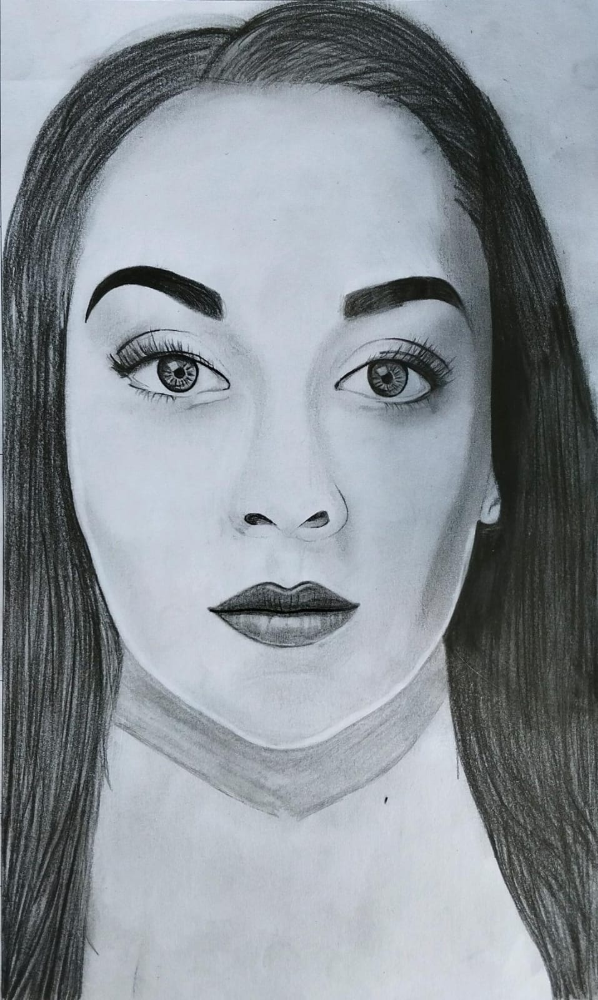
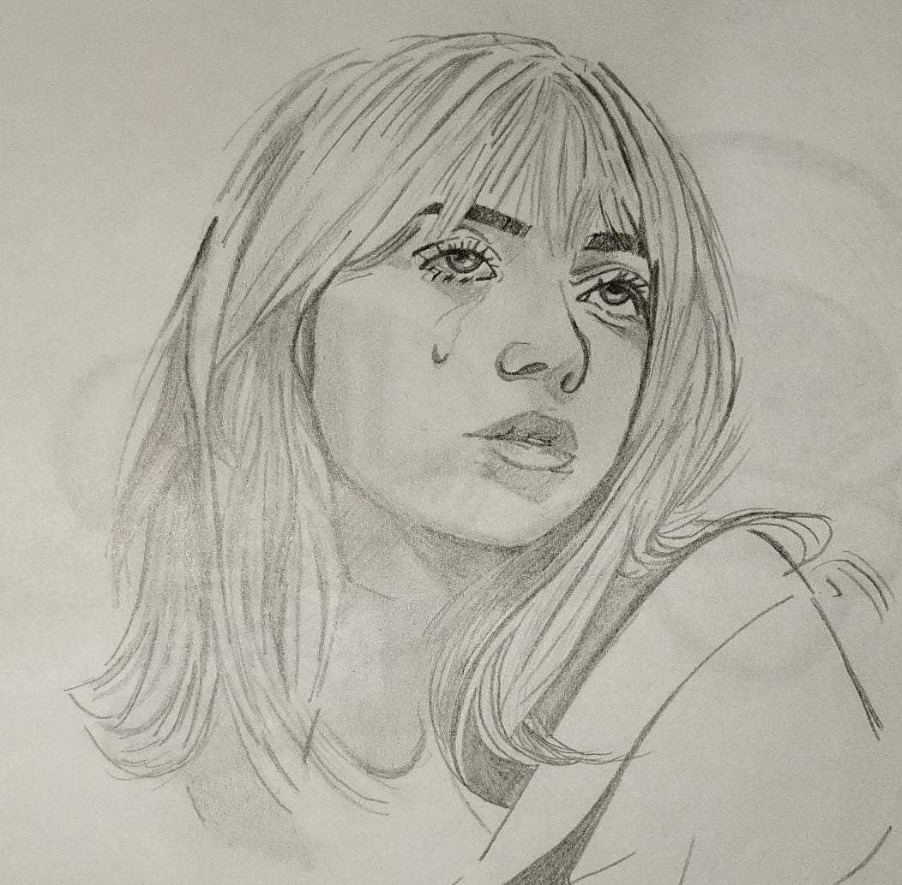
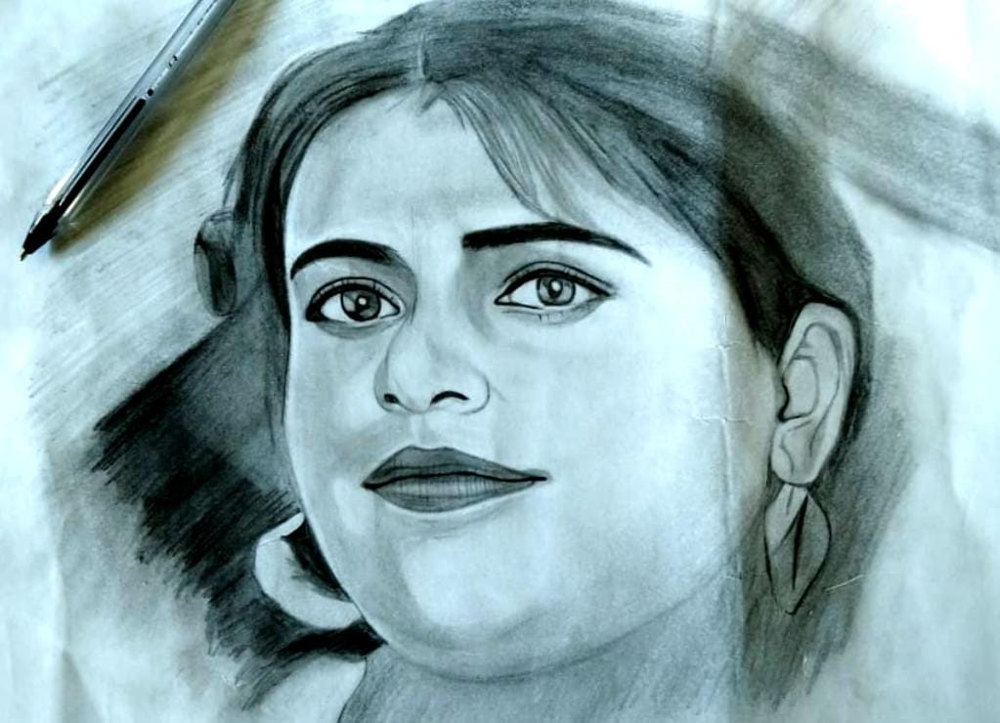

Dibujo de Retratos
El dibujo de retratos se centra en la representación detallada y fiel de la figura humana. Su objetivo es capturar no solo la apariencia física de la persona, sino también su expresión y personalidad. Los retratos suelen resaltar características distintivas y pueden variar desde representaciones muy realistas hasta interpretaciones más estilizadas. El dibujo de retratos implica capturar la esencia y apariencia de una persona a través del arte. Involucra técnicas como la observación detallada de la forma, las proporciones y las sombras del rostro. Además, es importante tener en cuenta la expresión facial y los detalles únicos que definen al sujeto. La práctica constante y el estudio de las técnicas de iluminación y perspectiva son esenciales para mejorar en el retrato.

